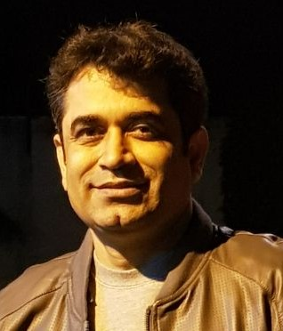

Contact
Phone Number
9983959538
Address
68/115,Pratap Nagar,Sanganer,Jaipur,302033
Email
dr.choudhary.sanjay@gmail.com
Dr. Sanjay Choudhary
M.B;B.S/M.D.
Profile
I am a Professor in Jaipur and has been teaching at the Mahatma Gandhi Medical College for 18 years.
I have done my graduation from R.N.T
medical college , Udaipur and Post graduation
from S.M.S medical college , Jaipur , afterwards I settled down in Jaipur and joined Mahatma Gandhi Medical
College as an Assistant Professor and am presently working as a Senior Professor.
Qualification
|
Degree
|
Institution
|
Year of passing
|
Reg. no
|
|
M.B;B.S
|
R.N.T. Medical College, Udaipur, Rajasthan
|
1998
|
018107
|
|
M.D.(Forensic Medicine)
|
S.M.S. Medical College,Jaipur, Rajasthan
|
2003
|
009018
|
Dissertation
Postmortem Interval: - A comparative study of Potassium level in Cerebrospinal Fluid, Vitreous Fluid, Synovial Fluid and Pericardial Fluid.
Acheivements
- Participated in all sessions of Forensic Medicon-2001 and presented papers on:
- Medico legal Aspect of Sex Determination
- The significance of Medico legal Autopsy in determining Mode and Cause of Death.
Certifications
- Certificate from Public Health Foundation Of India
for completing Certificate Course in Evidence Based
Diabetes Management in 2012.
- Certificate of Recognition from Boston University
School of Medicine for completing the Post Graduate
Program in Pediatric Nutrition in 2015.
Experience
- Assistant Professor at Mahatma Gandhi Medical College,
Sitapura,Jaipur from 2003 to 2008
- Associate Professor at Mahatma Gandhi Medical College,
Sitapura,Jaipur from 2008 to 2012
- Professor at Mahatma Gandhi Medical College, Sitapura,
Jaipur from 2013 till date